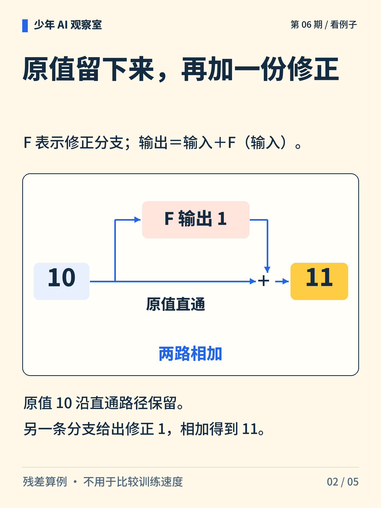
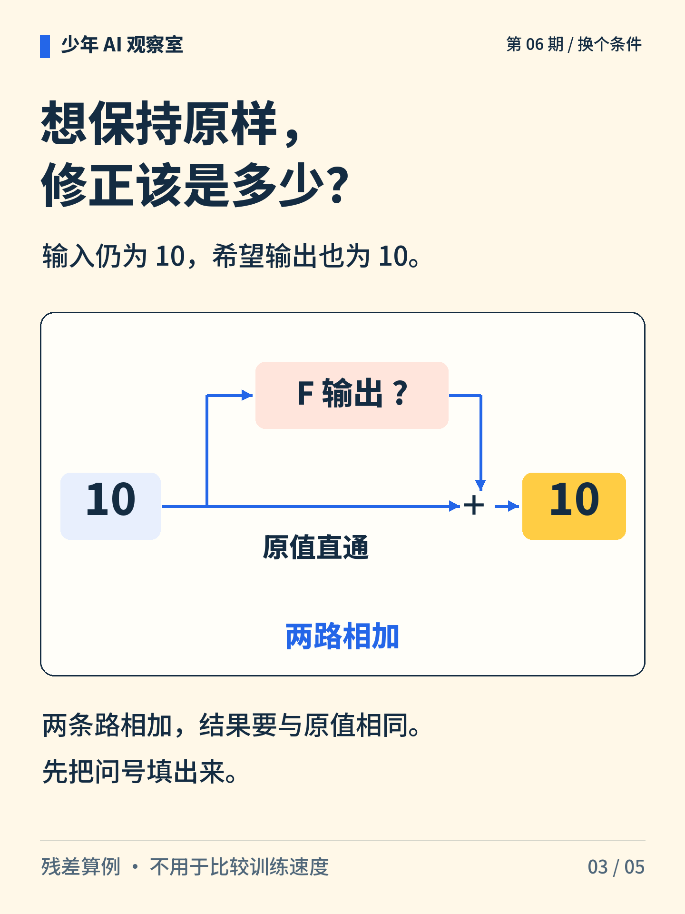
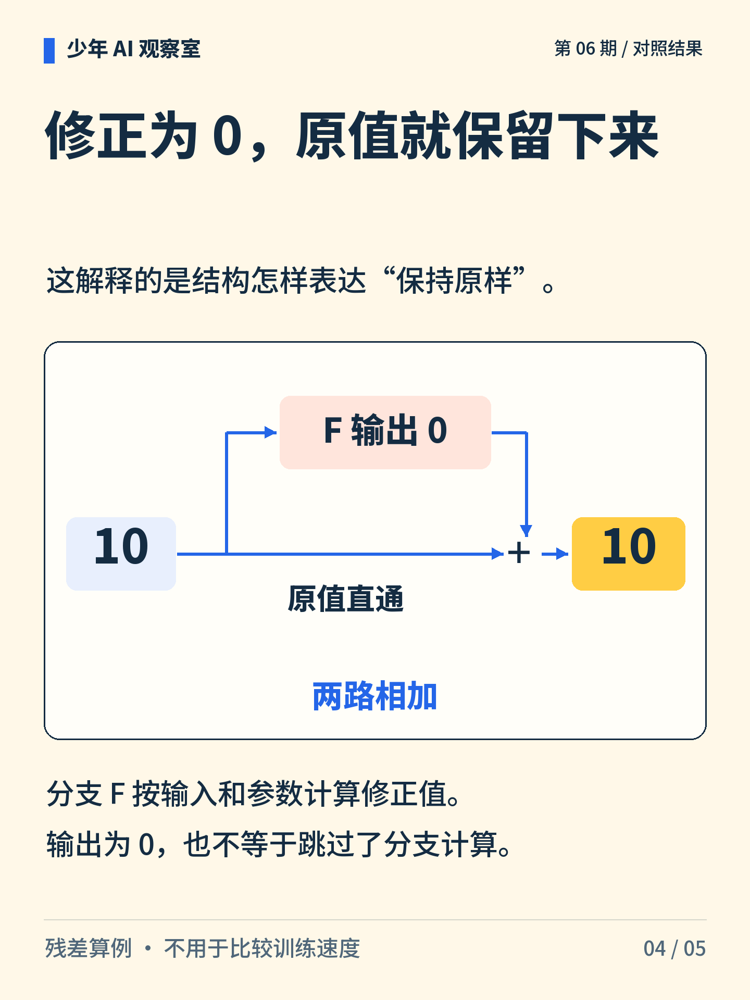
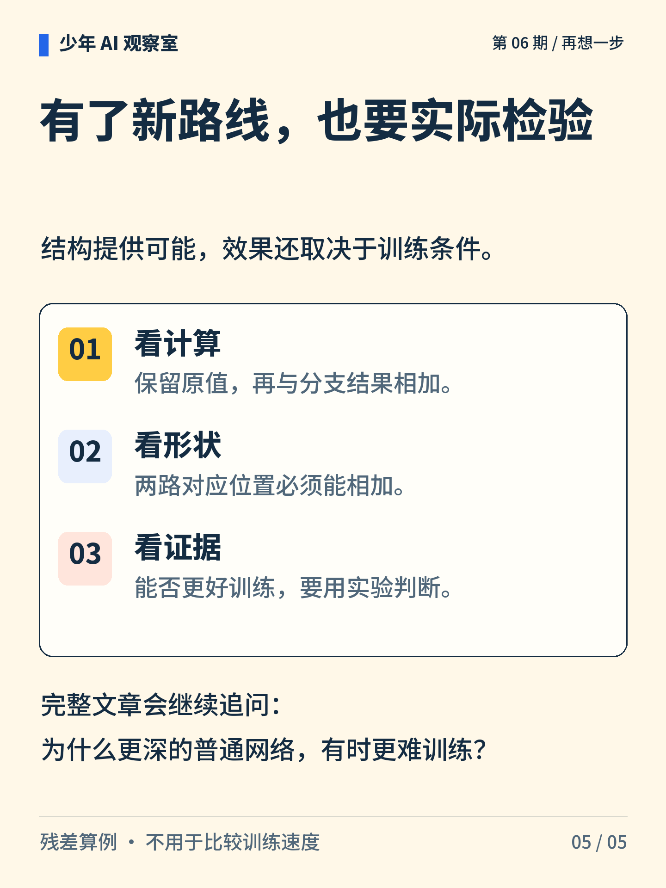

少年 AI 观察室 · 第 06 期
网络越深，就一定越好吗？
多加几层，不代表一定更好训练。先看一种计算路线：保留原值，再加上一份修正。

图解文字
两条路径从 10 出发，一条直通，一条给出修正 1，汇合为 11。

图解文字
分支 F 的输入也是 10；它算出修正 1，与直通的 10 相加，输出 11。

图解文字
输入为 10，希望输出也为 10。根据两路相加，求修正分支的输出。

图解文字
修正为 0 时，10＋0＝10。分支仍按输入和参数计算。

图解文字
检查计算路线、两路的形状是否匹配，以及实际训练证据；不能只凭层数判断效果。
想一想
如果希望输入原样通过，修正分支应输出多少？
展开参考思路
应输出 0，因为 10＋0＝10。这里说明“保持原值”可以怎样表达；输出为 0 不等于分支没有计算，也不能由这道算式推断训练速度。
残差结构保留一条直通路径，再加上分支算出的修正。
本例用一个数说明两路相加。实际网络中对应位置需要能够相加，训练效果还受结构、数据和训练条件影响。
正文首图为 AI 辅助生成的概念插画；第 2—5 张图按核对过的文字与规则绘制。
延伸阅读资料
文中算例与图解用于说明原理，不是实际模型的测评结果。研究结论对应以下资料。〔1〕 He 等，Deep Residual Learning for Image Recognition，2015 预印本／CVPR 2016。arXiv:1512.03385。
https://arxiv.org/abs/1512.03385
〔2〕 He 等，2016，Identity Mappings in Deep Residual Networks，ECCV。arXiv:1603.05027。
https://arxiv.org/abs/1603.05027
书目信息沿用原稿，本轮未重新核验外部网页的可访问性。